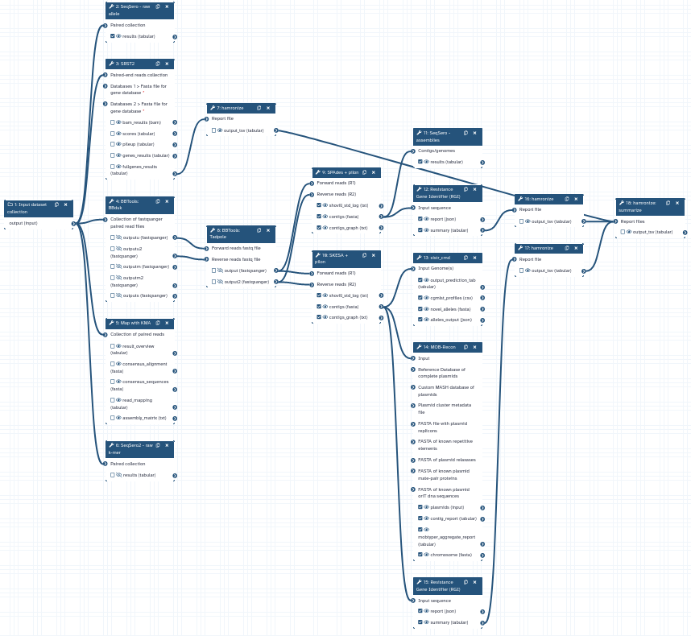

With this galaxy pipeline you can use Salmonella sp. next generation sequencing results to predict bacterial AMR phenotypes and compare the results against gold standard Salmonella sp. phenotypes obtained from food. This pipeline is based on the work of the National Food Agency of Canada. Doi: [10.3389/fmicb.2020.00549](https://doi.org/10.3389/fmicb.2020.00549) | tool | version | license | | -- | -- | -- | | SeqSero2 | 1.2.1 | [GNU GPL v2.0](https://github.com/denglab/SeqSero2/blob/master/LICENSE) | | BBTools | 39.01 | [MIT License](https://github.com/kbaseapps/BBTools/blob/master/LICENSE) | | SRST2 | 0.2.0 | [BSD License](https://github.com/katholt/srst2/blob/master/LICENSE.txt) | | hamronize | 1.0.3 | [GNU LGPL v3.0](https://github.com/pha4ge/hAMRonization/blob/master/LICENSE.txt) | | SPAdes | v3.15.5 | [GNU GPL v2.0](https://github.com/ablab/spades/blob/main/LICENSE) | | SKESA | 3.0.0 | [Public Domain](https://github.com/ncbi/SKESA/blob/master/LICENSE) | | pilon | 1.1.0 | [GNU GPL v2.0](https://github.com/broadinstitute/pilon/blob/master/LICENSE) | | shovill | 1.0.4 | [GPL-3.0 license](https://github.com/tseemann/shovill/blob/master/LICENSE) | | sistr | 1.1.1 | [Apache-2.0 license](https://github.com/phac-nml/sistr_cmd/blob/master/LICENSE) | | MOB-Recon | 3.0.3 | [Apache-2.0 license](https://github.com/phac-nml/mob-suite/blob/master/LICENSE) |
{kind=link}